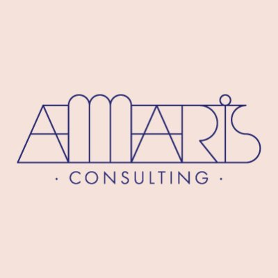

Fullstack .NET Developer with over 4 years of experience building, maintaining, and integrating enterprise web applications using C#, ASP.NET Core, ASP.NET Framework, Angular, and Vue.js. Experienced in RESTful API development, third-party integration, application migration, and security remediation.
Hands-on experience with CI/CD workflows, Docker, GitHub Actions, and Jenkins, with a strong focus on application security, code quality, and system reliability. Experienced in collaborating with cross-functional teams throughout the software development lifecycle.

INFORMATION
Email
nguyenvinh120330@gmail.com
Phone
0837152541
Address
Ho Chi Minh City
SKILLS
Programming Languages:
C#, JavaScript, TypeScript, HTML, CSS (SCSS), Python.
Frameworks & Technologies:
ASP.NET Core, ASP.NET Framework/MVC, Angular, Vue.js, ReactJS.
Backend Development:
RESTful APIs, Dependency Injection, Autofac, JWT Authentication
Database, ORM:
SQL Server, MySQL, ADO.NET, Entity Framework, Stored Procedures, Complex Queries
Frontend Development:
Component-based Architecture, NgRx, Responsive UI Development
DevOps & Tools:
Docker, GitHub Actions, Jenkins, JFrog/Nexus Artifactory, Git, SVN, Postman
Application Security:
SQL Injection, XSS Remediation, Secret Management / Exposed Secret Remediation
Caching & Messaging:
Redis (basic), Kafka (logging)
Software Practices:
OOP, Debugging & Troubleshooting, Agile/Scrum, Cross-team Collaboration
CERTIFICATION
Applications of AI for Anomaly Detection
NVIDIA
NVIDIA
TOEIC LR 690
VSTEP B2 Level
AWARD
Academic Encouragement Scholarship
2020-2021, 2021-2022
2020-2021, 2021-2022
PROFILE SUMMARY
EDUCATION
Master of Computer Science
Bachelor of Information Technology
GPA: 8.73/10
WORK EXPERIENCE

Amaris Consulting - .NET Consultant 07/2026 - Present
Contributed to an enterprise application integration and migration project for a global insurance client, supporting the transition of existing applications and services across enterprise environments.
Upgraded Docker base images for OpenL WebStudio and WebService, working with Dockerfiles and existing GitHub Actions workflows to build and publish customized images to JFrog Artifactory.
Developed and integrated OPSWAT file-scanning services using RESTful APIs across multiple .NET applications, supporting secure file upload and download workflows.
Applied Autofac-based dependency injection to register and manage application services, ensuring seamless integration with existing system architecture.
Worked with GitHub Actions and Jenkins CI/CD pipelines to support application builds, artifact management, and deployments across different environments.
Identified and resolved application security vulnerabilities reported by AppScan, including SQL Injection, Cross-Site Scripting (XSS), and exposed secrets in source repositories.
Key Achievements:
Integrated OPSWAT file-scanning functionality across multiple applications, strengthening file security controls and ensuring consistent validation during file handling.
Improved application security by remediating vulnerabilities and exposed-secret issues identified during security assessments.
Developed and maintained fullstack features for a CRM-based dashboard system using ASP.NET Core, Vue.js, and RESTful APIs, supporting dynamic data visualization and reporting.
Enhanced backend services to support automated report generation, enabling dynamic data mapping into predefined templates.
Built interactive frontend components with dynamic filtering capabilities, allowing users to customize data queries and visualization.
Key Achievements:
Implemented automated PowerPoint and Excel reporting, supporting multiple slides/sheets with dynamic data mapping to improve reporting efficiency.
Designed and developed a dynamic filtering system, enhancing dashboard usability and enabling flexible data exploration.
Developed fullstack applications using ASP.NET Core and Angular for internal enterprise systems.
Applied NgRx for state management to build scalable and maintainable frontend applications.
Developed SQL Server queries and stored procedures to support business logic and data processing.
Key Achievements:
Implemented Quartz.NET scheduling for automated task execution and time-based workflows.
Optimized SQL queries and stored procedures to improve system performance.
KEY PROJECTS
Amaris Consulting: Enterprise Application Integration & Migration
07/2026 - Present
Description: An enterprise M&A integration project focused on transitioning existing insurance applications and services into a unified technology environment following a business acquisition.
Achievements:
Integrated OPSWAT REST APIs across multiple .NET applications to enhance file security and validation.
Upgraded OpenL Docker base images using GitHub Actions and JFrog Artifactory.
Remediated application security vulnerabilities identified through AppScan and source code assessments.
Frameworks & Technologies: C#, .NET, RESTful APIs, Autofac, GitHub Actions, Jenkins, JFrog, Nexus.
Description: A CRM-based dashboard system for data visualization, reporting, and export.
Achievements:
Developed fullstack dashboard features using ASP.NET Core APIs and Vue.js for data visualization.
Automated PowerPoint and Excel reporting with dynamic data mapping.
Built a dynamic filtering interface to customize data queries and improve dashboard usability.
Frameworks & Technologies: Vue.js, ASP.NET, PptxGenJS, VXE-Table, ElementUI, HighChart, SQL Server
Description: A task management system supporting task tracking, scheduling, and automated reminders.
Achievements:
Developed ASP.NET Core APIs integrated with Angular for task management workflows.
Implemented Quartz.NET scheduling for automated task execution and reminders.
Improved workflow reliability through backend validation and business logic enhancements.
Frameworks & Technologies: .NET Core (C#), Quartz.NET, ADO.NET, NgRx, Angular, SQL Server